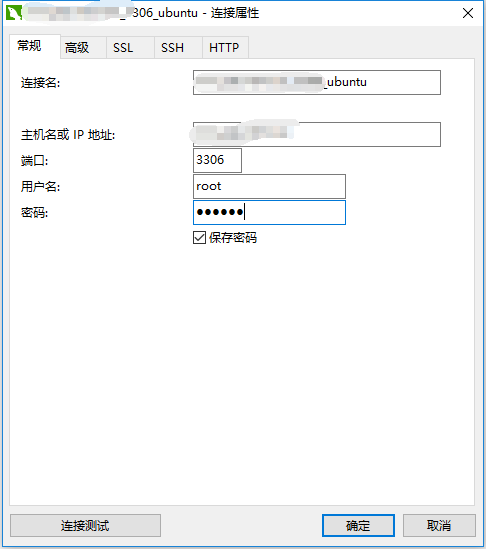
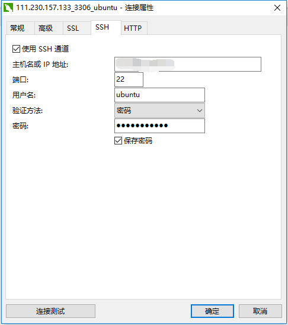
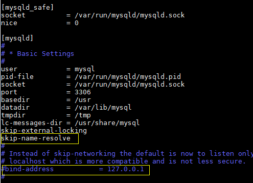
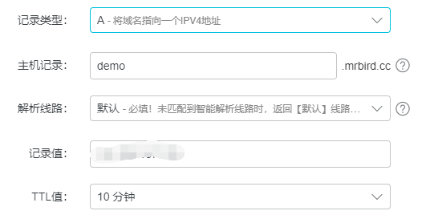

近期腾讯云推出云服务器团购优惠，刚好打算搭建个FEBS的演示环境，于是买了台120/年的云服务器，配置为1核2G、1M带宽，加赠50GB对象存储空间，系统为Ubuntu 16.04。部署过程中遇到一些新的问题，在这记录一下。
工具准备
搭建前先准备好远程登录软件，这类软件很多，这里推荐的是MobaXterm；文件的上传下载推荐使用FileZilla；数据库连接推荐使用Navicat Premium。
Java环境搭建
Java环境的搭建可参考（包括安装JDK，MySQL）：ubuntu16-04搭建Java开发环境。Tomcat下载后解压即可。
远程连接MySQL
开启MySQL远程连接的前提是在安装MySQL初始化的时候允许远程连接，然后输入以下命令：
|
|
这段话的意思是允许任何IP以root账户远程访问，密码为123456。这里的密码设定只是为了演示，实际必须满足在初始化MySQL时密码强度的设定，即validate_password_policy：
| Policy | Tests Performed |
|---|---|
0 or LOW | Length |
1 or MEDIUM | Length; numeric, lowercase/uppercase, and special characters |
2 or STRONG | Length; numeric, lowercase/uppercase, and special characters; dictionary file |
当密码强度和设定的不一致时，MySQL提示 Your password does not satisfy the current policy requirements错误。
然后执行一下语句，使得设定生效：
|
|
接下来使用Navicat远程连接MySQL，打开Navicat，新建MySQL连接：

IP填云服务器的公网IP地址，用户名和密码为上面设定的root和123456。除此之外，还得填写SSH连接信息：

IP填云服务器的公网IP地址，用户名和密码为云服务器的用户名和密码。
点击连接测试后发现Navicat报错：
Lost connection to MySQL server at 'reading initial communication packet', system error: 0
打开MySQL配置：
|
|
找到[mysqld]，添加skip-name-resolve，并将bind-address= 127.0.0.1配置注释掉即可，如下所示：

然后再次点击Navicat连接测试即可成功。
项目部署
在本地将项目打包后，使用FileZilla将项目上传到Tomcat的webapp目录下，运行bin目录下的startup.sh脚本即可。
域名绑定
如下新增域名解析：

记录值为云服务器的公网IP地址。配置解析后，就可使用 域名:端口号/项目名 的形式访问了。比如http://demo.mrbird.cc:80/febs/login，端口号默认就是80，所以可以简写为http://demo.mrbird.cc/febs/login。